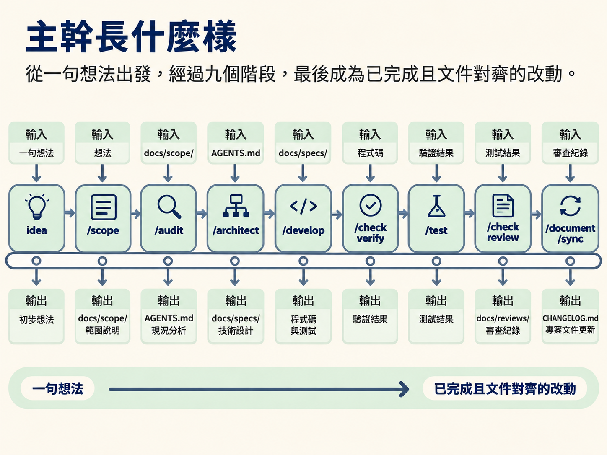
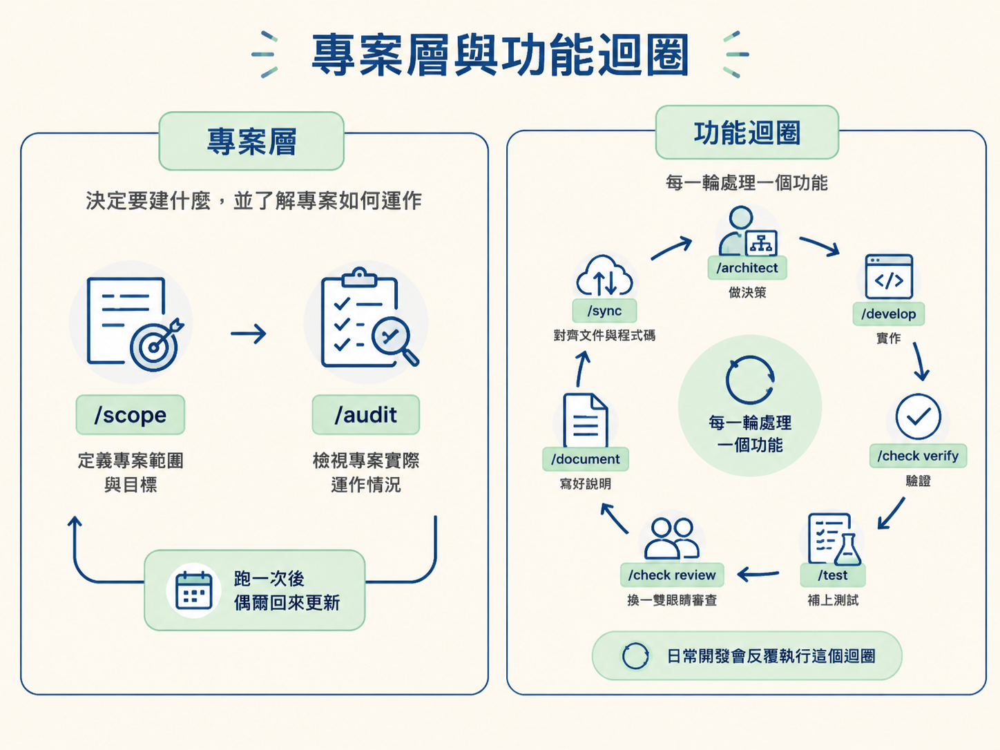
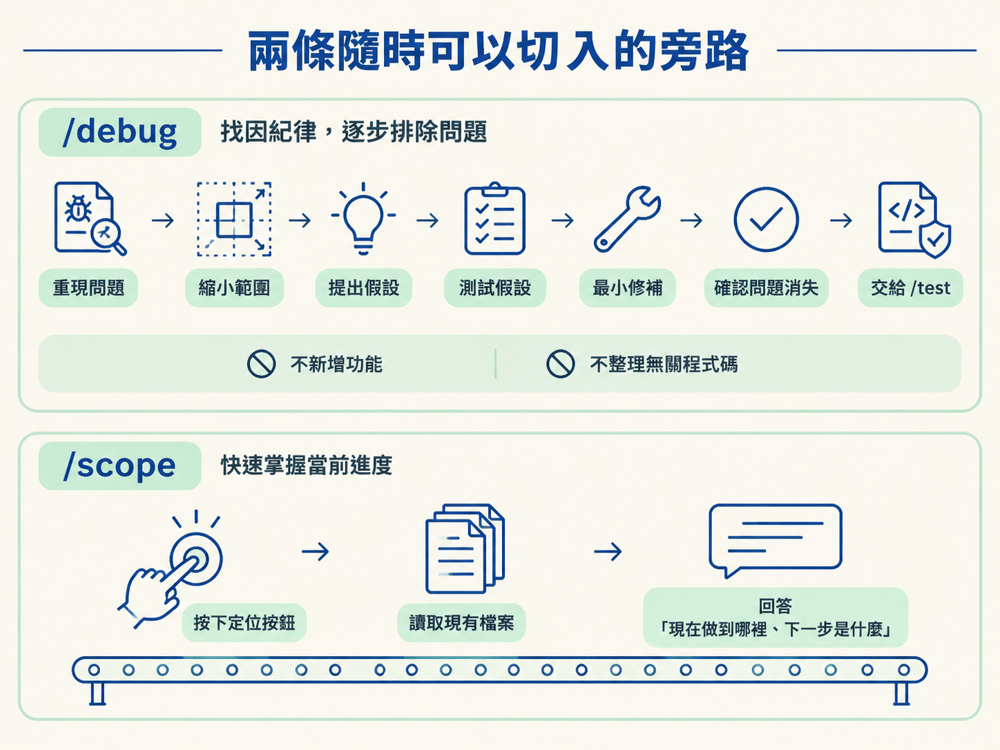
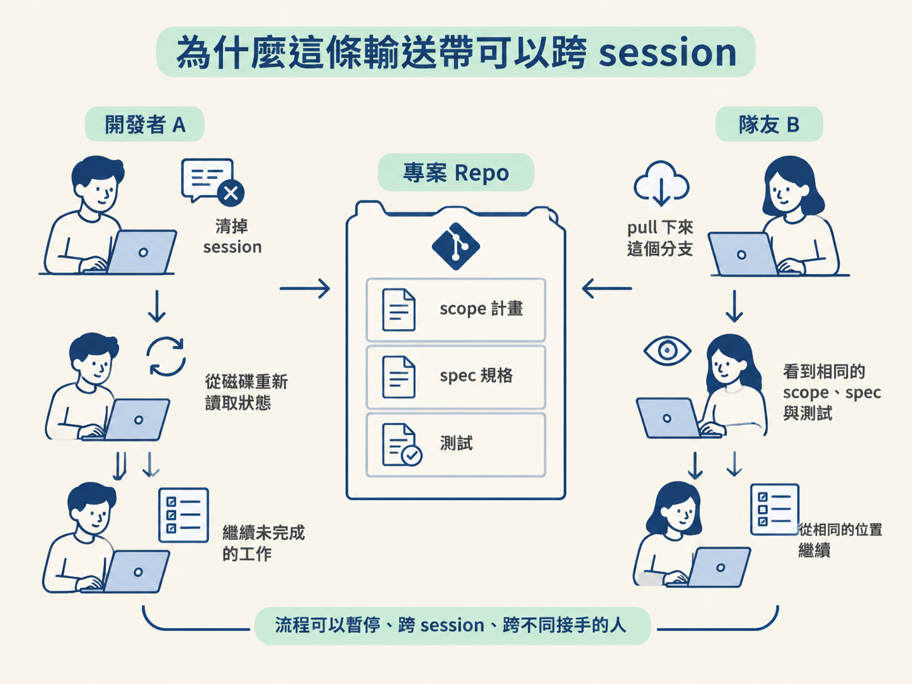

完成這一節後，你應該能畫出九階段的 DAG，說明每一階段的輸入、輸出，以及它會寫進 repo 的檔案。同時，也能指出 /debug 和裸 /scope 這兩條隨時可以切入的旁路。
想像你對 coding agent 說：「幫我做一個小 app，可以註冊、登入，而且每個人都有自己的待辦清單。」它很快交出一個看起來能跑的專案。當下當然很順利，但三個禮拜後，你想加上「分享清單」功能，打開專案卻發現自己想不起來：資料庫為什麼選這一套？登入用的是哪個方案？上一版到底做到哪裡？
你回頭翻對話紀錄，卻發現原本的 session 早就被清掉了。
這類問題通常不是 agent 不夠聰明，而是開發過程沒有留下足夠清楚、可以重新讀取的成果。jsm-skills 想解決的，正是這個問題：把「從一句話到交付」拆成一條有階段的輸送帶，而且每個階段完成後，都把結果寫成專案裡的實體檔案。
這一節先把整條輸送帶攤開，確認有哪些站、每站負責什麼，以及它們如何互相銜接。
第一個容易產生的誤會，是把這九個階段想成九道必須依序通過的關卡。這套工作流的主張其實相反：每個階段都是一個獨立的 skill，你只需要執行這次改動真正需要的那些，順序也可以依專案情況調整。
這套流程的骨架是：上一個階段的產出，成為下一個階段的輸入，而且這些產出都是實體檔案。因此，真正流動在各階段之間的主角不是對話，而是檔案。
依照慣例排列，主幹會長成這樣：
idea → /scope → /audit → /architect → /develop → /check verify → /test → /check review → /document → /sync可以把它想成一條輸送帶：最前端是你腦中的一句想法，最末端則是一項已經完成、寫好說明，而且專案文件也重新對齊的改動。

不過，這只是慣例上的順序，不代表每次都必須從第一站一路走到最後一站。你應該從哪一站開始，要看手上的專案是全新的、既有的，還是 monorepo。這部分會在 Step 3 再詳細說明。
每個階段都集中回答一個問題，並且只負責那個問題。把它們的問題、輸入與輸出排在一起，整條流程就會清楚許多。
| 階段 | 它回答的問題 | 吃什麼（輸入） | 留下什麼（輸出檔案） |
|---|---|---|---|
/scope | 要建什麼？應該先做哪一塊？ | 一句點子、既有的 repo | docs/scope/ 裡的計畫 |
/audit | 這個專案實際上是怎麼運作的？ | 真實的專案檔 | AGENTS.md，以及指向它的小 CLAUDE.md |
/architect | 這個重大決策應該怎麼做？ | 模糊的請求、既有 context | docs/specs/ 裡的一份 spec（狀態為 Proposed） |
/develop | 如何依照決策把功能蓋出來？ | spec、AGENTS.md、design.md | 應用程式碼；spec 轉為 In Progress，scope 也往前推進 |
/check verify | 它真的跑得起來，而且符合規格嗎？ | 真的跑起來的 app、spec 的驗收條件 | 驗證結果（可存成 spec 旁的 verify.md） |
/test | 這次改動要怎麼避免回歸？ | 尚未提交的變更 | 測試檔，以及記錄框架選擇的 test-preferences.json |
/check review | 換一雙眼睛看，這份 diff 有沒有問題？ | 這份 diff | docs/reviews/ 裡的發現（只讀，不改碼） |
/document | 這件事要怎麼說給人聽？ | 真實的 commit 與 diff | PR 描述、CHANGELOG.md、release note |
/sync | 檔案和程式碼現在還一致嗎？ | repo 現在的樣子 | 重新對齊過的 AGENTS.md、scope、spec 狀態 |
表格裡有兩件事值得先記住。
第一，check 是一個 skill，但有兩種模式。verify 會真的把 app 跑起來，依照規格確認功能是否運作；review 則讓另一個模型閱讀 diff，提供資深審查角度的意見。兩者處理的是不同問題，因此會出現在流程中的不同位置。
第二，document 和 sync 很容易被當成「有空再做」的收尾工作，實際上卻是這套流程對團隊最有價值的部分。document 把冷冰冰的 diff 翻譯成人能讀懂的文字；sync 則回頭確認，專案文件沒有因為這次改動而開始說謊。
這條主幹還可以依照工作性質分成兩段。
最前面的 /scope 和 /audit 屬於專案層。它們處理整個專案：要建什麼、專案實際如何運作，以及團隊有哪些慣例。新專案通常會先跑一次；之後每當要規劃新一批工作時，再回頭更新相關內容。
中間這一段則是會不斷重複的功能迴圈：
/architect → /develop → /check verify → /test → /check review → /document → /sync每一輪處理一個功能：先做決策，再實作；接著驗證、補上測試、換一雙眼睛審查、寫好說明，最後把文件與程式碼重新對齊。日常開發大多會反覆走在這個迴圈裡。

第一個設計是：每個階段的輸出，都是下一個階段可以直接讀取的檔案。
scope 寫下的計畫會被 architect 和 develop 讀取；architect 寫下的 spec 會交給 develop；develop 留下的檢查步驟，則會被 check verify 拿來執行。階段之間靠檔案交接，而不是靠某段對話的記憶。
第二個設計是：每一站只修改自己擁有的檔案。
scope 建立 scope，architect 負責寫 spec 內容，develop 只移動 spec 的狀態那一行，sync 則修正已經過期的地方。這種「單一擁有者」的規矩，能避免同一份檔案被各個階段隨意改寫，最後變得愈來愈混亂。
到了 Step 4 對照 SDD 時，會再回頭說明這個設計為什麼重要。
主幹之外，還有兩條不屬於固定順序的路徑。遇到對應情況時，可以隨時切進去。
第一條是 /debug。只要東西壞掉、拋出錯誤，或行為和預期不符，就可以直接走這條路，不需要先有 scope，也不需要先有 spec。
它遵循一套紀律明確的找因流程：先重現問題，再把範圍縮小到某個位置；接著提出一個可以被否證的假設，測試這個假設；找到原因後做最小修補，確認問題消失，最後把回歸測試交給 /test，避免同一個 bug 靜悄悄地回來。

/debug 只處理這件正事。它不會順手新增功能，也不會整理不相關的程式碼。
第二條是裸的 /scope，也就是不帶任何參數直接執行 /scope。當你想知道「現在做到哪裡了？下一步是什麼？」時，它會讀取現有檔案並回答你。你可以把它想成輸送帶上的定位按鈕：隨時按一下，就能確認自己目前在哪一站。
前面每一站的產出都是檔案，這件事讓流程可以暫停，也可以之後再繼續。
你可以做到一半就清掉 session。下次開始時，agent 從磁碟重新讀取狀態，確認哪些工作已經完成，再從第一件尚未完成的工作接著做。
對團隊來說也是一樣。隊友只要把這個分支 pull 下來，就能看到同一份 scope、同一份 spec，以及同一組測試。狀態不依附在某個人的對話裡，因此換一個人接手，流程仍然可以從相同的位置繼續。

九個階段各自回答一個問題：scope決定要做什麼，audit記錄專案怎麼運作，architect做決策，develop依照決策實作，check用verify與review兩種方式確認，test防止回歸，document寫給人看，sync則把文件重新對回程式碼。scope與audit屬於專案層，中間七站則組成會反覆執行的功能迴圈。每一站的產出都是檔案，因此階段之間靠檔案交接，流程也能跨 session、跨不同接手的人。/debug與裸/scope則是兩條隨時可以切入的旁路。
知道整體地圖後，下一個問題自然會出現：這九站每次都要跑嗎？如果只是改一個按鈕顏色呢？下一步要處理的，就是如何裁剪這張地圖，也就是四種 workflow depth，以及「建議不是閘門」這條規則。